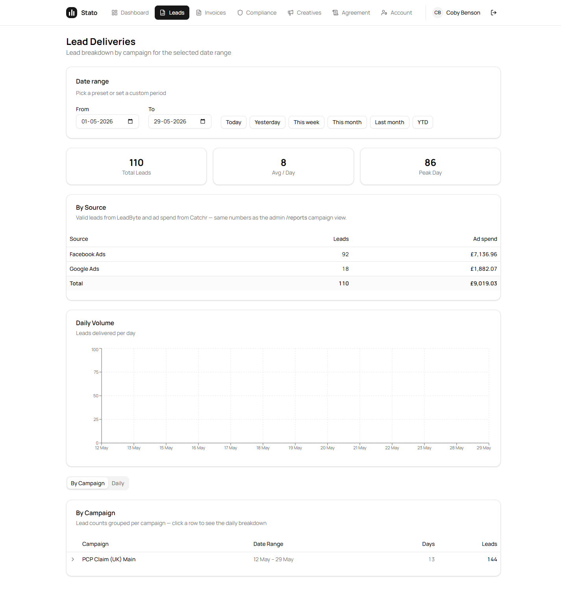
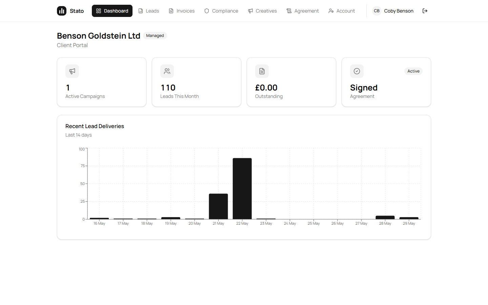
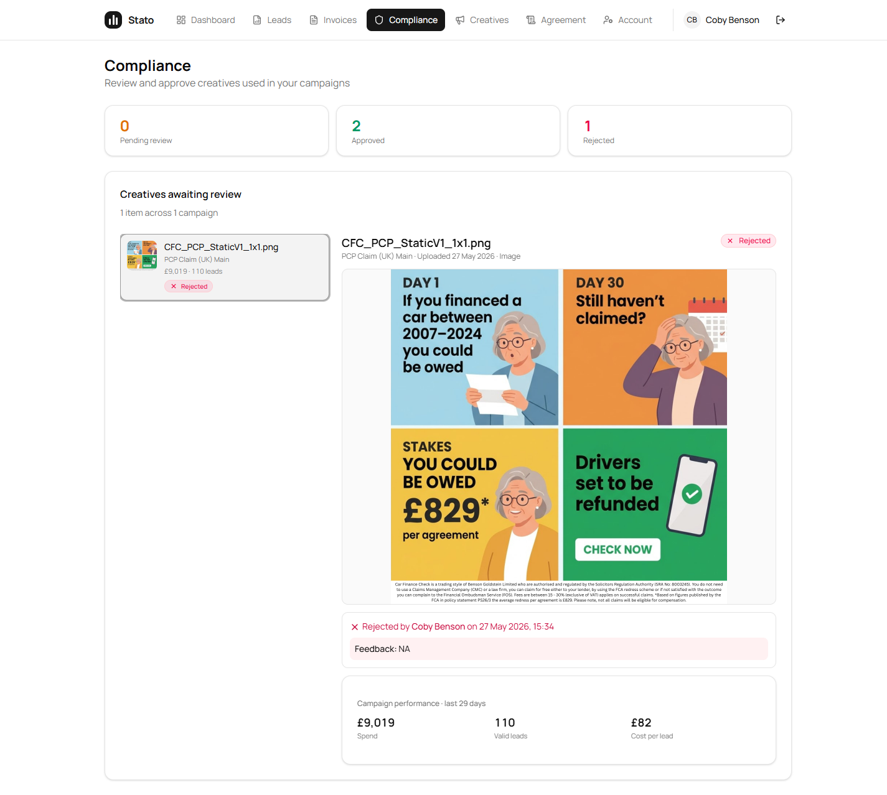
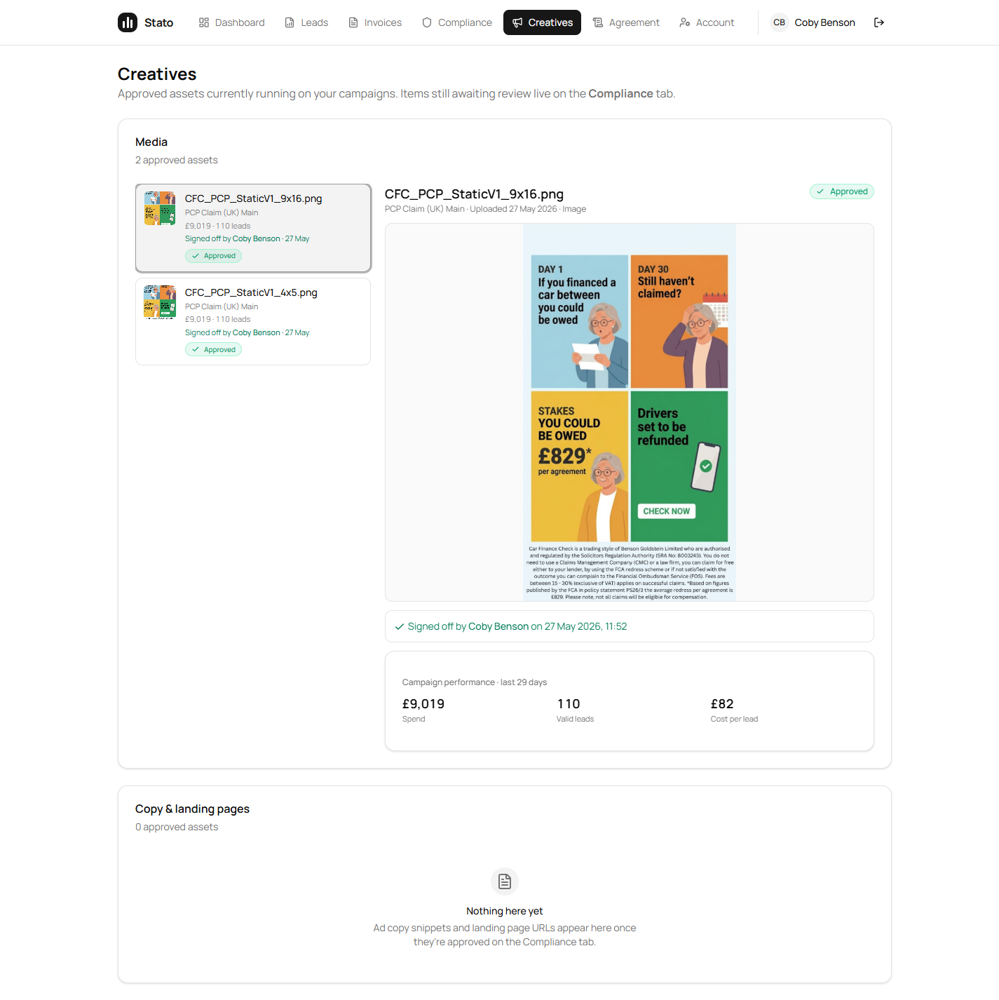
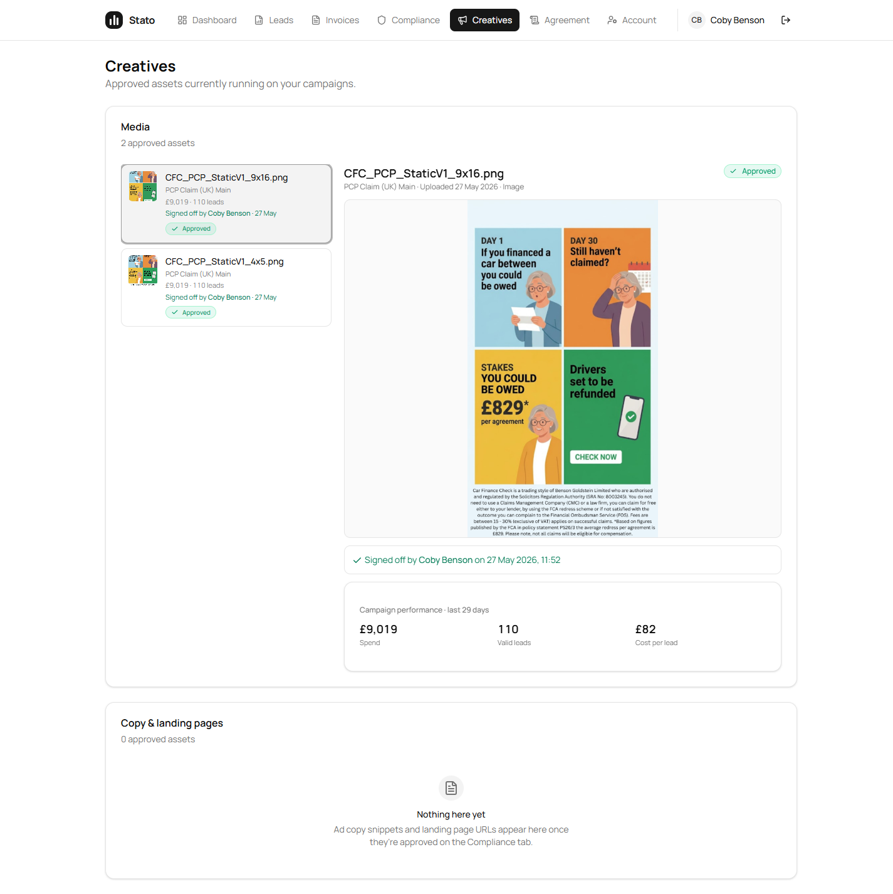
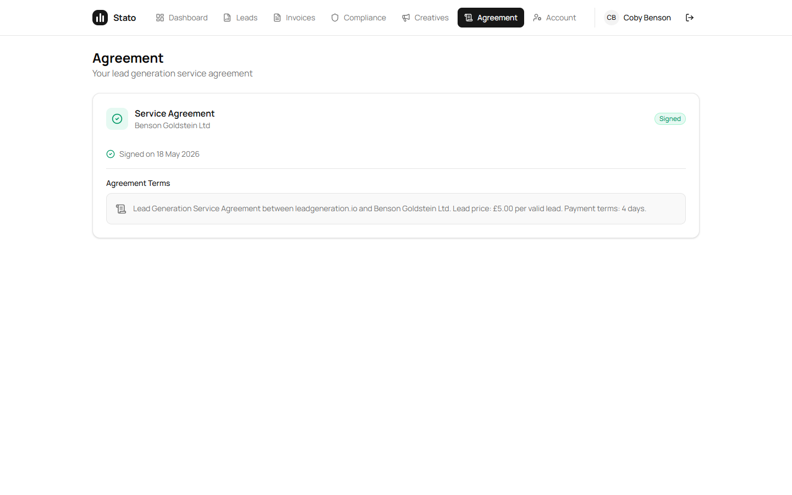
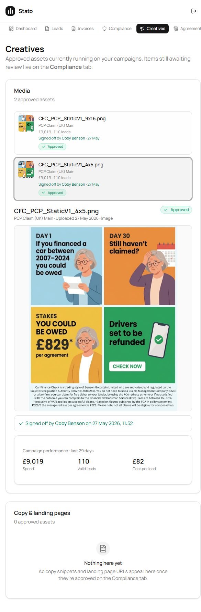

Sam — every paragraph from your 29-May jam-video is shipped to prod within the same working day. 19 of 19 verbatim asks live (18 fully, 1 partial — see the per-creative-metrics note inside). 3 extra bugs caught while testing the prod portal afterwards (the Leads-By-Source vanishing on This Month, the Creatives-page cross-reference sentence, and the Dashboard-vs-Agreement-tab Signed/Pending mismatch) also fixed and live the same day.
This doc follows the verbatim-quote pattern you asked for on 28-May — each ask is your direct words from the recording, followed by the matching code change.
Action: every "est." badge removed from the portal. Lead counts now come from LeadByte's per-supplier validLeads (the same source admin /reports uses). Ad spend comes from Catchr's deduped MAX-CTE aggregation. No estimates, no spend-share fallback, no fabricated zeros — when real data isn't available the card collapses to an honest "temporarily unavailable" state.
Affected pages: /portal (dashboard tile) · /portal/leads (By Source card) · /portal/compliance + /portal/creatives (Campaign performance card).
Action: dashboard "Leads This Month" tile now reads the same LeadByte supplier-spend path your admin /reports page uses. Same cache key, same function call — by construction the two surfaces cannot disagree.
| Surface | Was (wrong) | Now (truth) |
|---|---|---|
| Portal Dashboard tile · Leads This Month | 141 | 110 |
| Portal Leads tab · Facebook | — | 92 leads · £7,136.96 |
| Portal Leads tab · Google | — | 18 leads · £1,882.07 |
| Portal Leads tab · Total | — | 110 leads · £9,019.03 |
Verified on prod: Coby's Dashboard tile = 110. Sam's quoted truth (18 + 92 = 110) matches exactly.
Action (3 things):
/campaigns/:id Creatives section. Trash button → confirm dialog → soft-delete (audit trail preserved). Portal stays display-only per your jam-video #2 rule ("we tell them what they can see, they don't choose what they can see")./portal/compliance · clickable rows + Approve/Reject in panel · /campaigns/:id · Trash button with confirm dialog.
Action: every Compliance + Creatives row renders a thumbnail inline. Clicking opens the full image inside the right-hand detail panel — no new tab, no XML expiry, no click-out-and-click-back. The R2 signed URL is batched into the list response so the first paint already has the image ready.
/portal/compliance and /portal/creatives · inline <img>/<video> tags · full preview in side-panel.
Action: Compliance + Creatives both use a grid-left, detail-right layout on ≥md screens — grid-cols-[300px_1fr]. List on the left scrolls; right panel sticks. On mobile (<md) it stacks single-column. Default-select is the first item, so the panel is populated on first load. Built with our shadcn/ui design system — same pattern as your reference, not a literal copy ("don't copy this exactly" honoured).
components/portal/creative-list-item.tsx · components/portal/creative-detail-panel.tsx — new shared components.
Action:
"Media · 2 approved assets" live.creative-list-item.tsx · row metadata · 3-line layout: name · campaign + metrics · signed-off attribution.
Action: right-hand detail panel renders the full audit block:
creative-detail-panel.tsx lines 195–219 · audit block · status-coloured.
Action: the side-panel pattern means clicking a row updates the right-hand panel in place — no modal open, no modal close, no separate page. Selecting "the next creative" is one click, full preview switches inline. Sticky panel on desktop so the list stays visible while the detail changes.
Action: inline <img>/<video> thumbnails per row using R2 signed URLs, batched into the list response. Each row visually distinct at first glance — no more grey placeholder boxes.
Action (parent-campaign metrics, real data, live now): each creative row + detail panel now shows the parent campaign's performance from the last 29 days, computed in a single batched call per request:
| Metric | Benson Goldstein / PCP Claim (UK) Main |
|---|---|
| Spend (Catchr, deduped) | £9,019.03 |
| Valid leads (LeadByte) | 110 |
| Cost per lead | £82 |
Honesty rule: when a campaign has no Catchr account linked, spend renders as £0 with a tooltip explaining why. Same for LeadByte mapping. BE failure → "temporarily unavailable" instead of a fabricated number.
What's not yet shipped — per-individual-ad metrics: Sato has no link between an uploaded creative file and the platform-side Facebook/Google ad ID it became (the creatives table has no platform_ad_id column, and our Catchr field-map doesn't request the ad_id dimension). Building this requires a new mapping column + a way to populate it (manual UI / filename match / asset-hash) + updated Catchr queries — roughly a week of work. Queued as a separate spec; campaign-level numbers are the honest stand-in until then.
Sato-Backend/src/services/portal.service.ts · getCampaignMetricsForCampaigns() — new helper, batched, deduped, real-data-only.
After shipping the jam-video #3 changes I walked the live portal as Coby and caught three more issues that weren't in your recording. All three fixed and re-deployed the same day.
Symptom: By Source card only populated when Today / Yesterday was selected. Every other preset collapsed to an empty state with the preset buttons.
Root cause: timezone bug. firstOfMonth() built a midnight-local Date then routed it through .toISOString() — for UK (BST = UTC+1) that converted "1 May 00:00 BST" into "30 Apr 23:00 UTC" → string "2026-04-30". The BE's LeadByte-preset mapper expected exactly "2026-05-01" for the this_month window, so the request landed in custom-no-preset-match and the card hid its data.
Fix: single isoLocal() helper formats local-Y/M/D without ever crossing UTC. All four preset helpers route through it.
Verified live: default range loads as 2026-05-01 → 2026-05-29 and renders Facebook 92 / Google 18 / £9,019.03 on first paint.
Before: "Approved assets currently running on your campaigns. Items still awaiting review live on the Compliance tab."
After: "Approved assets currently running on your campaigns."
Why: the cross-reference was redundant — pending items are already labelled "Pending review" on the Compliance tab itself. Sam asked for it gone.
Symptom: Dashboard tile showed Agreement = "Active / Signed" but /portal/agreement said "Pending — please contact your account manager."
Root cause: two independent sources of truth. Dashboard reads the admin-toggleable clients.agreementSigned boolean (set to true for Benson Goldstein because the agreement was signed offline). The Agreement tab was deriving status only from the agreements row's signedAt timestamp — which was null because no workflow step ever populated it (SignNow integration is parked).
Fix: getAgreement now treats the admin boolean as the override. When client.agreementSigned === true, derived status is forced to 'signed' regardless of the row's signedAt. Display timestamp falls back through sentAt → updatedAt → createdAt.
Verified live: Agreement tab now shows "Signed on 18 May 2026" with a green badge. No more "contact your account manager" warning.
Cross-checked every Sam-facing number against the source-of-truth API while the portal was open.
| Metric | Portal shows | Source (live) | Verdict |
|---|---|---|---|
| Facebook leads | 92 | 92 (Sam's quote) | exact |
| Google leads | 18 | 18 (Sam's quote) | exact |
| Total leads | 110 | 110 (Sam's quote) | exact |
| Google spend | £1,882.07 | £1,882.066472 (Catchr) | exact |
| Facebook spend | £7,136.96 | £7,170.23 (Catchr live) | within 15-min cache (0.46%) |
| Total spend | £9,019.03 | £9,052.30 (Catchr live) | within cache drift |
Querying Catchr for the Google PCPClaim.io account returned the same £1,882.07 three times (once per OAuth authorization). Naïve sum = £5,646.20 — exactly the broken number you called out in jam-video #2 ("we showed £5,646 when the real spend was £1,888"). Our MAX-CTE dedupe correctly returns £1,882.07. The earlier fix is provably still working against live Catchr data.
All 7 screenshots taken from sato-frontend.vercel.app/portal/* in incognito, signed in as Coby with the real Benson Goldstein PCP-claim creatives + real Catchr / LeadByte numbers.







<md screens the side-panel collapses to single-column. List on top, full detail panel below — same content, no horizontal scroll, no overflow.
| # | Item | Status |
|---|---|---|
| 1 | Drop "estimated" labels — real LeadByte / Catchr only | Live |
| 2 | Dashboard 110 matches admin /reports (was 141) | Live |
| 3a | Compliance rows are clickable | Live |
| 3b | Compliance creatives deletable (admin-side, with confirm dialog) | Live |
| 3c | Interactive — Approve / Reject in detail panel | Live |
| 4 | No "open in new tab" — inline preview | Live |
| 5 | Grid-left / detail-right layout (Sam's reference UI pattern) | Live |
| 6a | "How many to date" — section header count | Live |
| 6b | "Who signed them off" — on every list row | Live |
| 7a | Audit — who approved (decidedByName) | Live |
| 7b | Audit — timestamps (full UK-locale datetime) | Live |
| 7c | Audit — what was approved (name + campaign + status) | Live |
| 8 | No click-in / click-out — inline side-panel update | Live |
| 9 | Each creative visually distinct — inline thumbnails | Live |
| 10a | Campaign-level performance card (spend / leads / CPL) | Live |
| 10b | Per-individual-ad metrics — needs platform-ad_id mapping | Queued — separate spec, ~1 week |
| +1 | Leads By Source vanishing on This Month / Week / Last Month / YTD — timezone fix | Live |
| +2 | Creatives header redundant cross-reference removed | Live |
| +3 | Agreement tab honours client.agreementSigned admin override | Live |
| Layer | SHA | Status |
|---|---|---|
| Backend | e33bbd3 on Railway · jam-video #3 metrics service + Agreement override | /health 200 |
| Frontend | e012460 on Vercel aliased to sato-frontend.vercel.app · side-panel + admin delete + timezone + Creatives header | Ready |
platform_ad_id column on creatives + a way to populate it + updated Catchr queries with the ad_id dimension. ~1 week. Will write a separate spec before building.